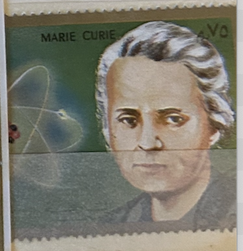
| SOURCE | TITLE| IMAGE MATCH | click to source page |
| Pixers | Poster Marie Sklodowska Curie - PIXERS.US | 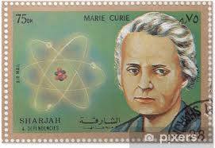 |
| Colnect | Stamp: Marie Skłodowska Curie (1867-1934) (Sharjah(Scientists) Mi:AE-SH 1374,Col:AE-SH 1972.00.00-088 📮 | 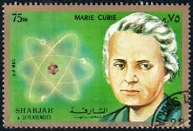 |
| Adobe | Postage stamp Sharjah 1972 Marie Sklodowska Curie Stock Photo | Adobe Stock | 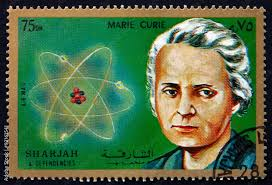 |
| Medium | Marie Skłodowska Curie. Marie Skłodowska Curie, born Maria… | by Ashwani Kumar | Medium | 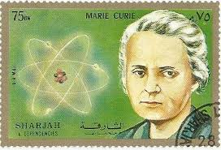 |
| eBay | Marie Curie Sklodowska s/s MNH Cat. Lollini atome MLI 33/34 C #ML1750 | eBay | 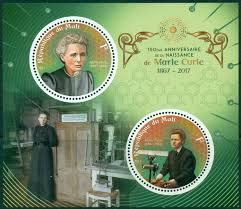 |
| eBay | Mozambique 2011 MNH, Marie Curie, Nobel Physics Chemistry, Odd Shape | eBay | 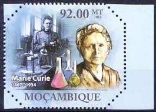 |
| eBay | Marie Curie 90th Memorial Anniversary MNH Stamps 2024 Central African M/S | eBay | 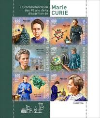 |
| Etsy | Stamp Marie Curie - Etsy Denmark | 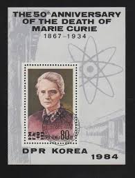 |
| eBay | Poland 2017. MI 4955. Maria Curie Skłodowska. Nobel Prize. Mini Sheet. MNH | eBay | 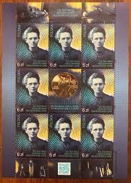 |
| andalusiafarm.org | Togo Marie Curie Complete Stamp Set 3919-3922 MNH Togo 2011 Marie Curie Stamp Collection - Complete Set Of 4 Mint Never Hinged MNH Stamps Celebrity Stamps | 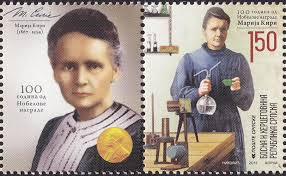 |
| eBay | 2023 United Nations Definitive Stamp on Marie Curie - MNH | eBay | 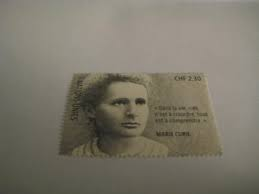 |
| HipStamp | Marie Curie Stamp Scientist XX Century Chemistry Prize S/S MNH # 4672-4675 | Worldwide - Other, General Issue Stamp / HipStamp | 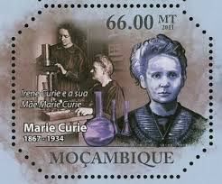 |
| eBay | CA486 2014 CENTRAL AFRICA FAMOUS PEOPLE 80TH ANNIVERSARY MARIE CURIE KB+BL MNH | eBay | 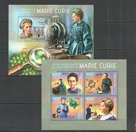 |
| factsjustforkids.com | Marie Curie Facts for Kids | 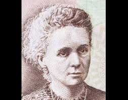 |
| AbeBooks | Marie Curie (Life Times): 9780749650209 - AbeBooks | 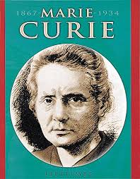 |
| ProBoards | Women on Stamps | The Stamp Forum (TSF) | 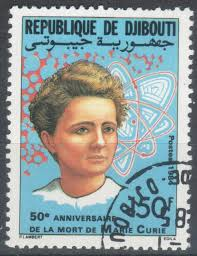 |
| HipStamp | 50th death anniversary Marie Curie privately produced glossy postal card | United States, Stamp / HipStamp | 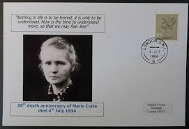 |
| Dreamstime.com | Portrait of Marie Curie, the 50th Anniversary of Death Editorial Stock Image - Image of drawing, cash: 330185539 | 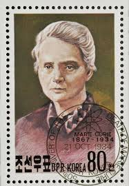 |
| Shutterstock | Poland Circa 1982 Cancelled Stamp Printed Stock Photo 90971627 | Shutterstock | 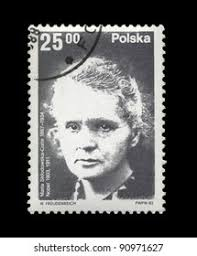 |
| Colnect | Stamp: Marie Curie (1867-1934) (developer of X-radiography) (Saint Helena(Medical Pioneers) Mi:SH 899,Sn:SH 849,Yt:SH 847,Sg:SH 918,WAD:SH002.2004 📮 | 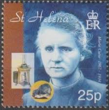 |
| Amazon.com | Amazon.com: Marie Curie: All You Have to Know eBook : Peters, David: Kindle Store | 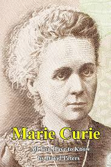 |
| Alan Marnett | Alan Marnett, Ph.D. | 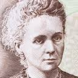 |
| Mystic Stamp | UNG741 - 2023 CHF2,30 Marie Curie - Mystic Stamp Company | 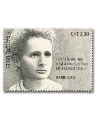 |
| BioSpace | Frances Arnold 5th Woman to Win Nobel Prize in Chemistry, Joining Madame Curie and Her Daughter - BioSpace | 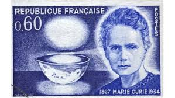 |
| Dreamstime.com | Marie Sklodowska-Curie, Famous Polish Nobel Prize Winner, Phisicist, Scientist, Radioactivity Observer, Djibouti, Circa 1984, Editorial Image - Image of exploration, black: 133971240 | 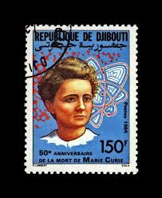 |
| eBay | SCIENTISTS Marie Curie Sklodowska science Chad 2014 stamp & s/s #tchad2014-113a | eBay | 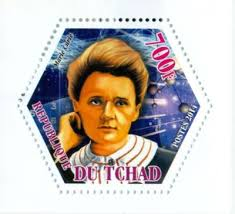 |
| Pixers | Poster phisicist Marie Sklodowska-Curie,radioactivity observer,science - PIXERS.US | 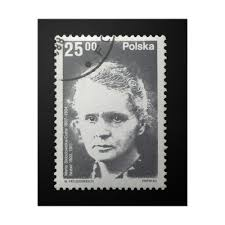 |
| Meditative Philately | Cote D'Ivoire Dogs Domestic Animals Souvenir Sheet of 6 Stamps Mint NH – Meditative Philately | 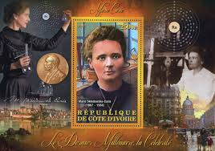 |
| Colnect | Stamp: Marie Curie (1867-1934) Chemist Physicist (Romania(Cultural Anniversaries 1967) Mi:RO 2612,Sn:RO 1944,Yt:RO 2322,Sg:RO 3487,Rom:RO 653f 📮 | 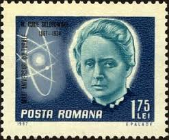 |
| eBay | Hexagon Odd Unusual Shape, Marie Curie, Nobel Physics, Chemistry | eBay | 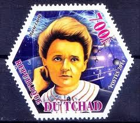 |
| HipStamp | Chemistry Stamp Marie Curie Gerty Cori Dmitri Mendeleev S/S MNH #4293-4295 | Africa - Togo, General Issue Stamp / HipStamp | 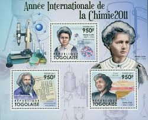 |
| eBay | CENTRAL AFRICA 40th MEMORIAL ANNIVERSARY OF MARIE CURIE SHEET FDC | eBay | 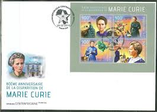 |
| eBay | Marie Sklodowska Curie Stamp Nobel Prize Physics Souvenir Sheet MNH #3919-3922 | eBay | 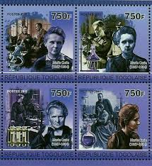 |
| Blogger.com | Lateral Science: THE DISCOVERY OF RADIUM by Marie Curie | 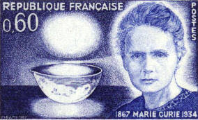 |
| Shutterstock | 50th Anniversary Isolated: Over 1,520 Royalty-Free Licensable Stock Photos | Shutterstock | 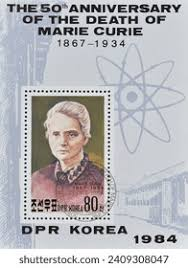 |
| Granger - Historical Picture Archive | Image of MARIE CURIE (1867-1934). Marie Sklodowska Curie. French (Polish-born) Chemist. On A French Postage Stamp, 1967, Commemorating The Centenary Of Her Birth. From Granger - Historical Picture Archive | 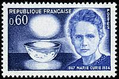 |
| eBay | Marie Curie Sklodowska m/s MNH Cat. Lollini atome BEN 7/8 C #BEN17 21 | eBay | 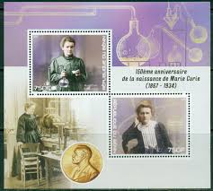 |
| eBay | Central Africa 40th Gedenken Jubiläum Von Marie Curie Blatt Mint Nh | eBay | 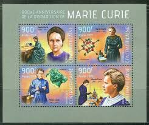 |
| postbeeld.com | Stamp 1984, Korea, North Marie Curie s/s, 1984 - Collecting Stamps - PostBeeld - Online Stamp Shop - Collecting | 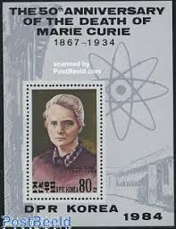 |
| eBay | Korea B65 used 1984 s/s Marie Curie Physics Science | eBay | 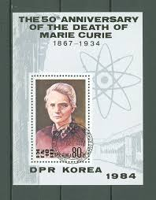 |
| eBay | Mozambique 2014 MNH, Marie Curie Nobel winner discovered Radium | eBay | 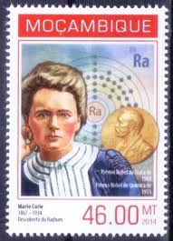 |
| The hugely influential physicist and chemist, Marie Skłodowska Curie, was born #onthisday in 1867. Curie was the first woman to be awarded a Nobel Prize and is the only person to receive | 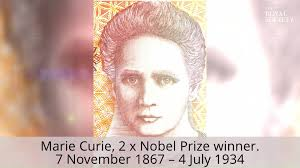 | |
| eBay | Ukraine 2024, Physics, Chemistry, Medicine, Nobel Prize, Maria Curie, sheet 9v | eBay | 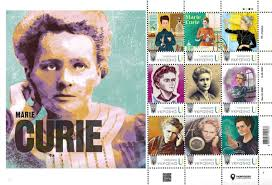 |
| Free stamp catalogue | Stamps with the theme Nobel Prize Winners - Freestampcatalogue.com - The free online stampcatalogue with over 500.000 stamps listed. | 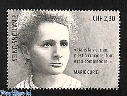 |
| On her birth anniversary, some interesting facts about Marie Curie: *Marie was only 15 when she graduated from high school *Marie Curie is the first woman to win a Nobel Prize. In | 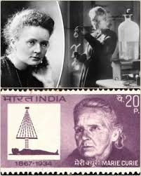 | |
| Copernico. Geschichte und kulturelles Erbe im östlichen Europa | Marie Curie (1867–1934): Natural Scientist, Double Nobel Laureate, Genius | Copernico. Geschichte und kulturelles Erbe im östlichen Europa | 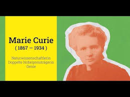 |
| Meditative Philately | Republic of Chad – Meditative Philately | 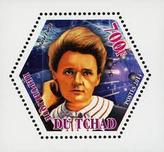 |
| Shutterstock | Poland Circa 1982 Stamp Shows Marie Stock Photo 257920016 | Shutterstock | 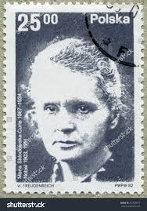 |
| 110 Marie Curie ideas in 2026 | marie curie, maria skłodowska curie, maria skłodowska | 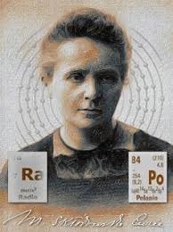 | |
| BitGab | Marie Curie · English listening exercise (beginner level) | bitgab | |
| eBay | Marie Curie Stamp | eBay | |
| Shutterstock | Physicist Chemist Maria Sklodowska-curie Portrait Poland Stock Photo 1472314799 | Shutterstock | |
| buyhungarianstamps.com | 210-211 Moldova - 1996 Europa: Famous Women (MNH) – Eastern Europe Postage Stamps | Hungaria Stamp Exchange | |
| Colnect | Stamp: Maria Sklodowska-Curie (1867-1934), Physicist 1903, 1911 (Poland(Polish Nobel Prize Winners) Mi:PL 2810,Sn:PL 2519,Yt:PL 2624,Sg:PL 2813,AFA:PL 2696,Pol:PL 2662 📮 | |
| 9 Les femmes scientifiques idées science à enregistrer aujourd'hui | scientifique, grand scientifique et bien plus encore | ||
| eBay | SIERRA LEONE 2017 150th BIRTH ANNIVERSARY OF MARIE CURIE S/SHEET MINT NH | eBay | |
| eBay | CENTRAL AFRICA 40th MEMORIAL ANNIVERSARY OF MARIE CURIE SOUVENIR SHEET MINT NH | eBay | |
| eBay | Physicists & Astronomers: Marie Curie Sklodowska & Lise Meitner #ML1146 IMPERF | eBay | |
| Stamps.org | The H amilton Hinge |